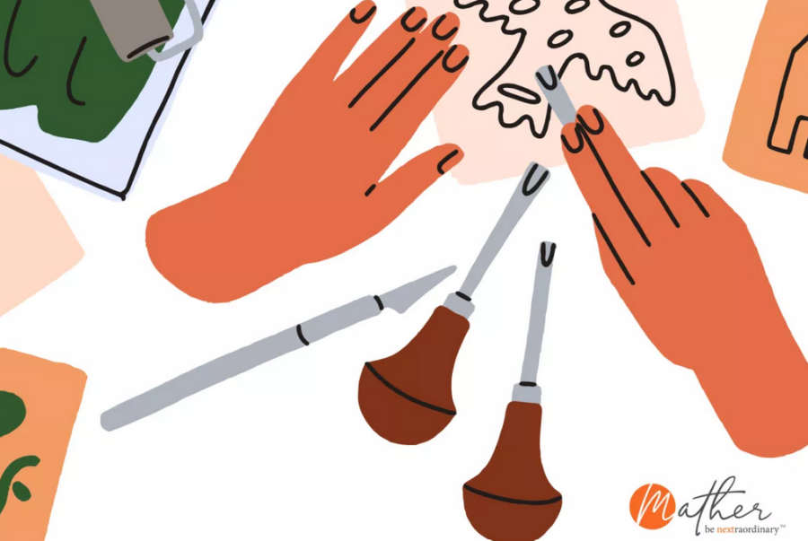

Viva la Vida: Linocuts
Adults ages 55+ are invited to join us for an immersive experience in the galleries, followed by an art-making activity. This month, we will highlight our Xicágo Gallery exhibition Rieles y Raíces: Traqueros in Chicago and the Midwest. In this workshop, we will delve into a printmaking technique where we carve rubber blocks by hand to create linocuts. Once carved, you can test your prints using ink pads!
Coffee and treats from local establishments will be provided. This program is free, but registration is required. If you have any questions, please contact angela@nationalmuseumofmexicanart.org.